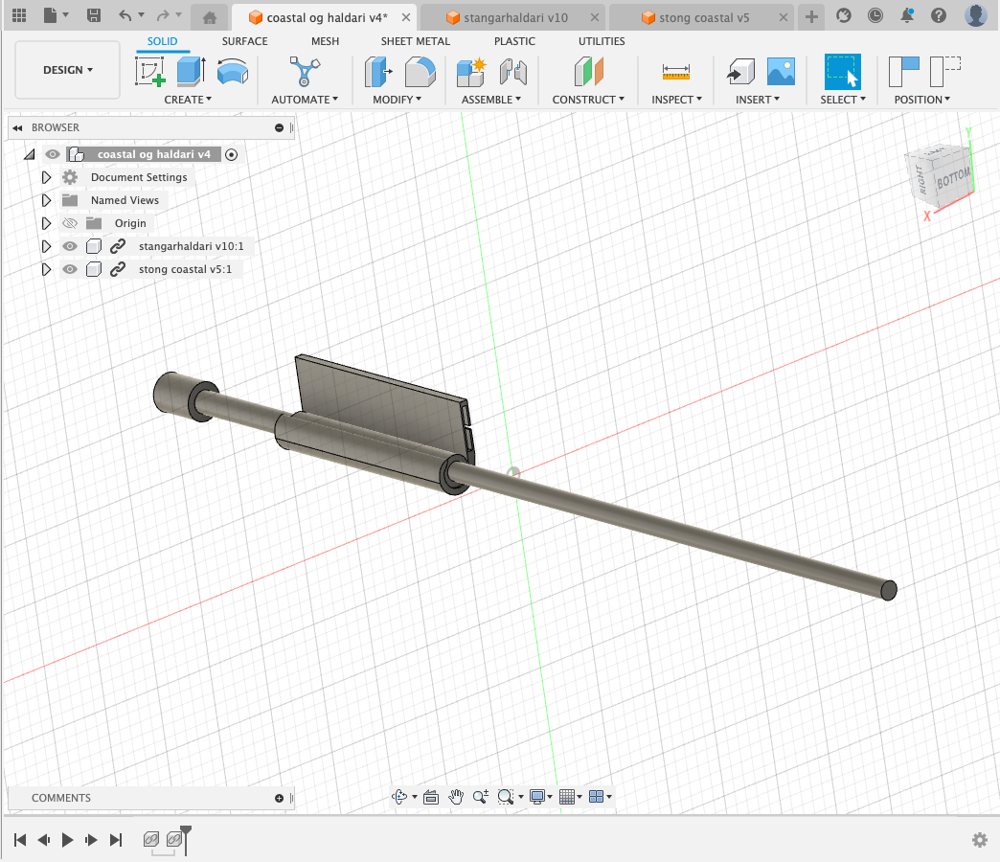
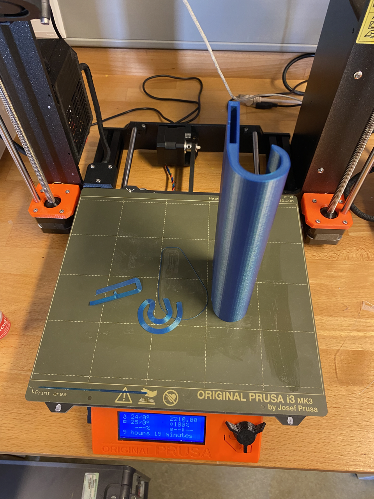
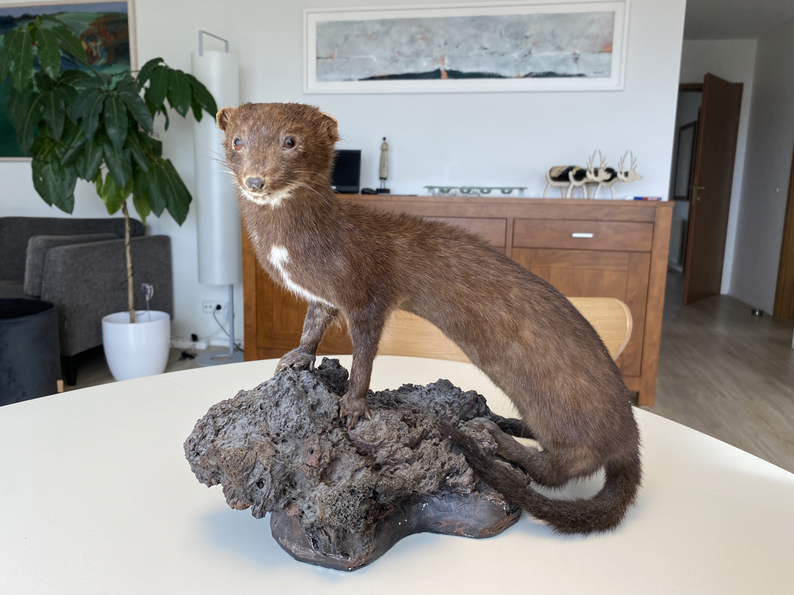
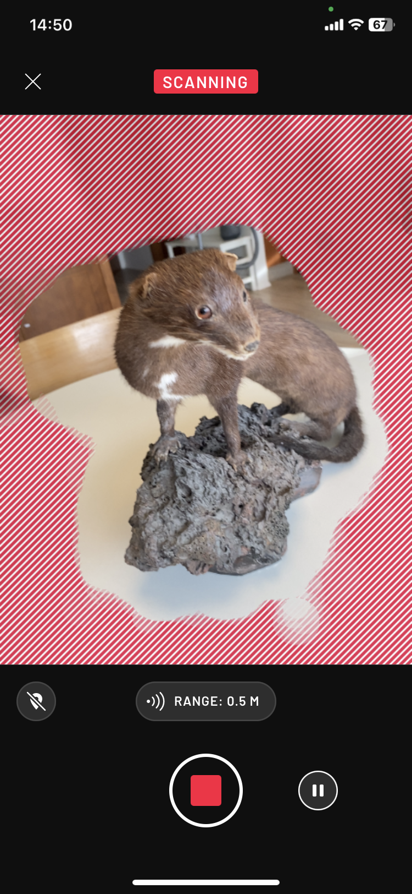
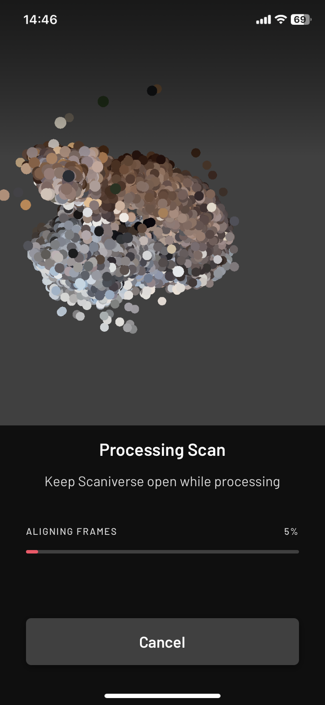
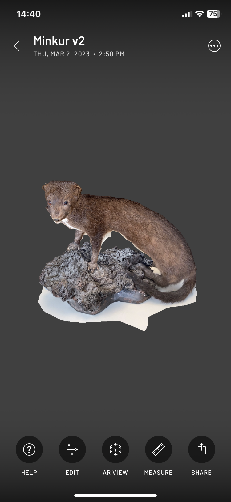

Verkefni 3 - 3D prentun og 3D skönnun
Umfjöllun
Þetta verkefni snýst um að teikna og 3D prenta einhvern hlut og einnig að prófa að 3D skanna einhvern hlut og segja frá ferlinu. Það hefur líklegast ekki farið framhjá neinum að það er ákveðið veiði þema á þessari síðu og veislan heldur bara áfram.
3D Prentun
FormálÉg stunda mikla stangveiði á sumrin. Eitt skipti þegar ég var í stangveiði með vini mínum honum Jóa að þá sá ég hann standa útí miðri ánni að skipta um flugu og stönginni hefði verið komið fyrir snyrtilega í einhverskonar stangarhaldara á vöðlunum hans. Mér fannst þessi græja algjör snilld, vanalega þegar maður er í þessum aðstæðum þá klemmir maður stöngina annað hvort í handakrika eða í klofið en það getur oft verið klunnalegt. Ég kannaði á netinu hvað svona haldari kostar og sá að verðið var 4.895 kr. Það er fullmikið fyrir minn smekk fyrir svona litla græju. Síðan þegar ég fékk verkefni að 3D prenta eitthvað þá datt mér strax í búa til minn eigin haldara, talsvert ódýrara að 3D prenta heldur en að kaupa það útí búð.
UndirbúningurÉg byrjaði á því að mæla þykktina og breiddina á vöðlubeltinu mínu. Síðan mældi ég stærðirnar á stöngunum mínum. Því næst fór ég að teikna.
Forrit, FusionÉg downloadaði Fusion 360 til að teikna. Set ekki link á vefsíðuna því það gæti verið úreltur link í framtíðinni
TeikningarHérna er það bara að dunda sér við að teikna, forritið er fljótlært og ef ég var strand að þá voru helling af tutorials á youtube.
Ég byrjaði á því að teikna haldarann m.v. stærðarforsendur sem ég var búinn að skrifa hjá mér fyrir beltið og stöngina. Síðan extrudeaði ég stærðina m.v lengdina á stönginni
Því næst bjó til litla stöng til að hafa sem viðmið. Extrudaði henni bara stutt því ég var bara að skoða handfangið
Hérna bjó til new design og skellti þessu saman. Ég teiknaði ekki neitt hér heldur einfaldlega hægri smellti á íhlutina á vinstri hönd og valdi "insert into current design. Síðan undir assemble -> joint setti ég það saman. Þetta er einföld samsetning en fyrir ítarlegri leiðbeiningar á flóknari samsetningu þá er hægt að skoða verkefni 2 á heimasíðunni.

3D prentunin sjálfSamsetningin leit þokkalega út. Þá er bara næst í stöðunni að vista stangarhaldarann sjálfann sem STL file, setja það á SD kort, SD kortið fer síðan í 3D prentarann, velja hvernig lit af plastefni ég ætlaði nota og ýta á start.
ÚtkomanÞetta heppnaðist bara mjög vel!

Litlu plast leifarnar til vinstri eru til að tryggja það að hluturinn sé fastur við plötunina á meðan prentun stendur. Mjög auðveld að fjarlægja leifarnar þegar hluturinn er tilbúinn, nógu fast við að enginn hreyfing eigi sér stað en nógu laust að hægt sé að taka af eftir prentun
Stangarhaldarinn sjálfur 360°
Stangarhaldari myndbandskynning
3D skönnun
Næsta verkefni var að 3D skanna einhvern hlut og segja frá ferlinu
Forrit og ferliÉg notaði IOS app sem heitir "Scaniverse". Ferlið er ekki flókið og appið hjálpar þér í gegnum öll skrefin.
Fyrst byrjaði ég á að finna viðfangsefnið sem ég ætlaði að scanna. Veiði þemað heldur áfram og á ég uppstoppaðan mink sem ég veiddi fyrir nokkrum árum.

Appið virkar þannig að þú ýtir á record og það býr til net/mesh og sýnir þér hvað þú ert búinn að scanna og hvað er autt. Fór bara einn hring í kringum minkinn og þetta var komið. Þarft ekki að taka sjálfur myndir og setja þær allar saman eins og í mörgum öðrum öppum sem ég hafði skoðað heldur gerir appið það fyrir þig.

Því næst býr það til mynda-punkta-mesh eins og sjá má á næstu mynd. Smellir á render og forritið fer að búa til 3D módel úr myndunum.

Svona lítur þetta fullklárað í appinu. Þá smelliru á "share" og þar geturu búið til myndband sem sýnir 360° scan

3D scan af minki, 360° myndband.
Tímaskráning
| Hvað var gert | Tími |
|---|---|
| Forvinna og mælingar | 1 klst |
| Fusion teikningar | 4 klst |
| Myndbands upptaka | 2 klst |
| Myndbands klipping | 2 klst |
| 3D scan | 1 klst |
| Vefsíðu skráning | 8 klst |
| Samtals | 18 klst |